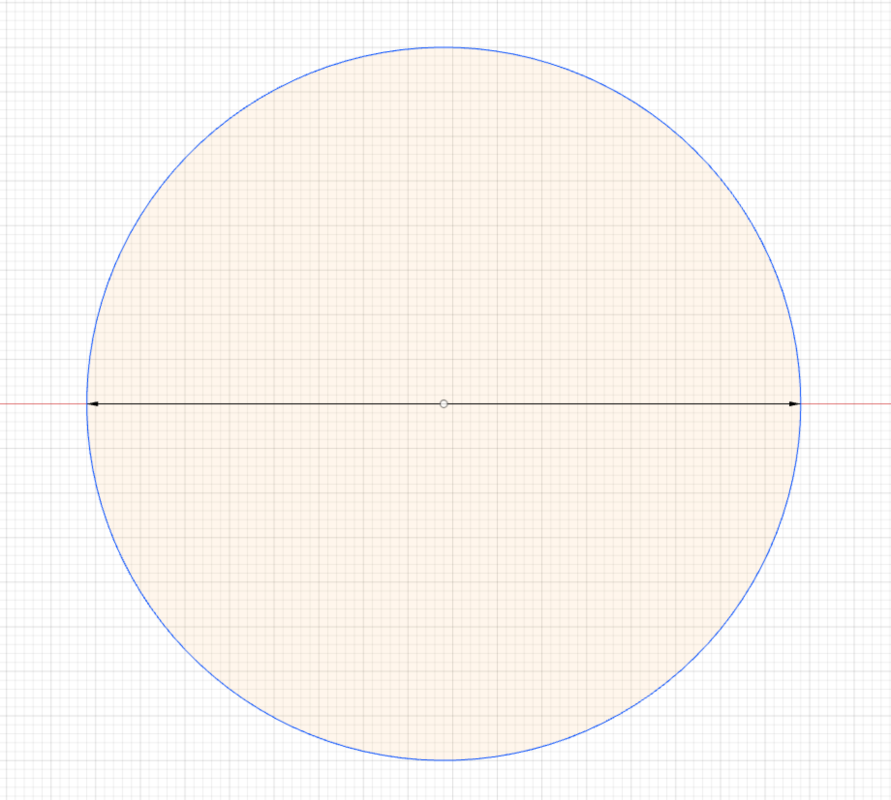
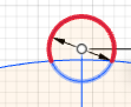
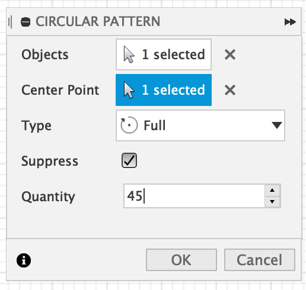
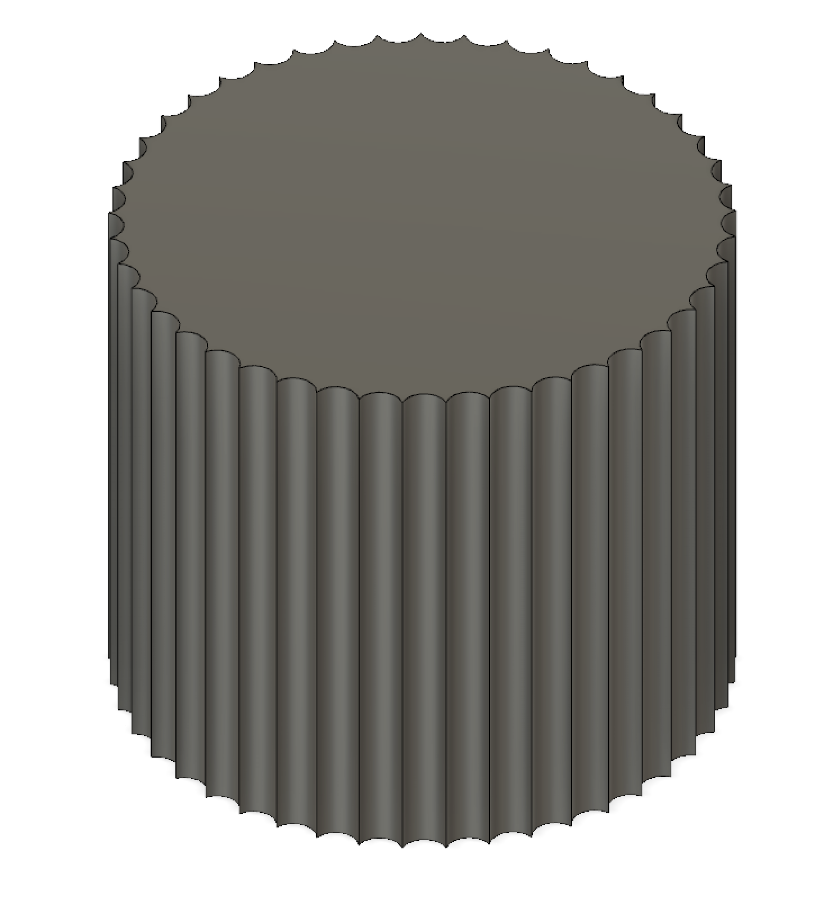

4.1 Designing the Flower Pot
I used Fusion 360 to design my flower pot. Initialy I created a new file and started sketching a circle on the x and y axises. I sketched a circle centered on the origin and with a 8 cm or 0.8 meters long diameter. This circle will be the base of the pot.

However, I didn't want my pot to be a simple cylinder. Hence, I decided to make litlle circular cuts around its circumference.
For this I drew a line on the y-axis that is 1 mm longer than the radius of the circle. This allowed me to draw a small circle centered on the end of the line with a radius of only 6 mm.
At the end it looked like this:
Then I used the "Trim" tool to get rid of the extra part of the small circle that I am not using, namely the part that stays outside of the big circle. This allowed me to better visualize the final shape of the Flower Pot.
However, this is only one small cut from the cylindrical pot. Hence I needed to repeat this around the circle's circumference. For this I used the "Circular Pattern" tool. This allowed me to select an object and a center pivot point to rotate around. By using this tool I was able to decide on how many cuts I can do.
After doing the circular pattern, I ended up with a shape that resembles a shuriken or a cogwheel. After this, I used the "Extrude" tool to make an object out of my sketches. I selected the inner area of the big circle which has a cogwheel shape due to the cuts by the small circles, and at the end I got this as a result:
Now my flower pot has a specific shape. Now I have to 3D print it but it seems odd that I didn't make it so that it will have a hole inside to put the plant in. However, the CAM application I use (+Prusas) has a "Vase" mode which turns your shape in to shell. You can use that as a flower pot. For 3D printing my design I need to save it as a file that I can import it to my CAM application. Hence, I need to save my object as an ".stl" file. For this I right clicked on my object on the Fusion 360 object legend and clicked "save as STL." Now I can upload it to Prusas.